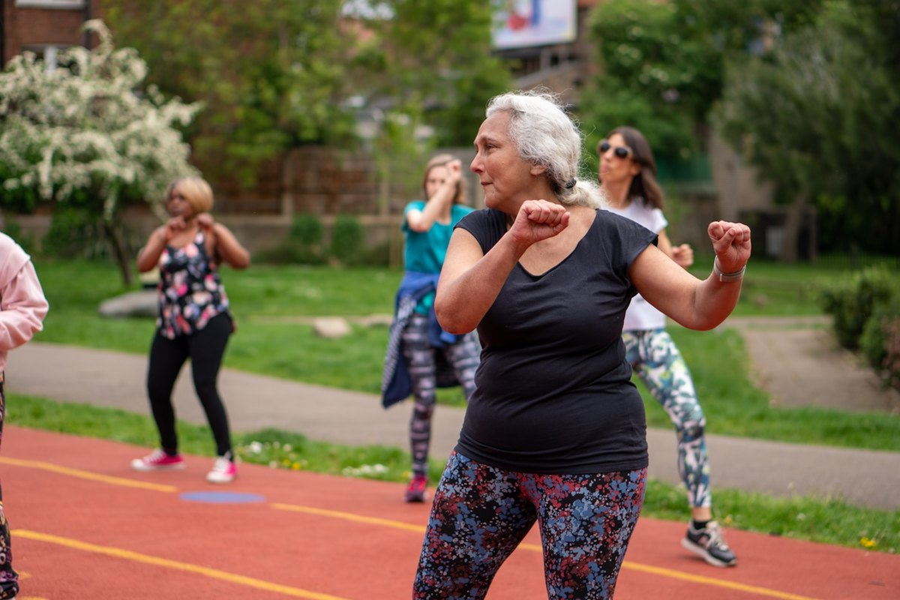

Gesundheit ist kein Zufall.
Sie ist eine Fähigkeit — und die kann jeder aufbauen.
Wir denken Gesundheit als System statt als Symptom. Wir erklären, wie der Körper wirklich funktioniert, und zeigen, was jeder selbst tun kann — verständlich, alltagstauglich und ohne Verkaufsabsicht.
Die Medizin behandelt Befunde. Sie erklärt keine Menschen.
Wer krank wird, bekommt eine Diagnose, ein Medikament und einen Termin. Was er selten bekommt: eine Erklärung, wie sein Körper funktioniert — und was er selbst tun kann, damit es besser wird.
Das liegt nicht an schlechten Ärzten. Es liegt an Annahmen, die nicht stimmen. Unser Gesundheitswesen ist darauf gebaut, Krankheit zu bekämpfen — nicht darauf, Gesundheit aufzubauen. Es teilt den Körper in Fachgebiete auf, betrachtet Organe getrennt voneinander und behandelt das, was in Messwerten auffällt.
Der Mensch ist aber kein Baukasten aus austauschbaren Teilen. Er ist ein zusammenhängendes Netzwerk, in dem alles miteinander verbunden ist. Wer nur einzelne Teile repariert, wird nie verstehen, warum das Problem wiederkommt.
Der Körper wird zerlegt, statt verstanden.
Jedes Fachgebiet schaut auf seinen Bereich. Doch jede Zelle steht mit den anderen in Verbindung, jedes Organ beeinflusst die übrigen. Wer nur einen Teil ansieht, sieht nicht, was wirklich passiert.
Symptome werden unterdrückt, nicht verstanden.
Ein Befund, ein Gegenmittel. Doch der Körper zeigt Beschwerden aus einem Grund. Wer nur das Symptom wegdrückt, verschiebt das Problem — und verpasst die Ursache.
Schonung wird mit Heilung verwechselt.
„Ruhen Sie sich aus" ist oft das Gegenteil von dem, was der Körper braucht. Was nicht gefordert wird, baut ab. Wer sich dauerhaft schont, verliert genau die Fähigkeit, die ihn gesund gemacht hätte.
Verantwortung wird abgegeben, statt übernommen.
Gesundheit gilt als etwas, das einem zustößt — oder das andere herstellen. Dabei entscheidet der Alltag: Bewegung, Schlaf, Ernährung, Belastung, Erholung. Nur weiß kaum jemand, was das konkret heißt.
Gesundheit ist kein Zustand. Sie ist eine Fähigkeit.
„Gesund" und „krank" als zwei Schubladen zu denken, führt in die Irre. Entscheidend ist etwas anderes: wie gut dein Körper mit dem umgeht, was das Leben an ihn heranträgt — und wie gut er sich davon wieder erholt.
Was Gesundheit ist
- Die Fähigkeit, Belastung auszuhalten und sich davon zu erholen
- Etwas, das sich aufbauen und trainieren lässt — in jedem Alter
- Ein Zusammenspiel von Körper, Kopf, Gefühl und Umfeld
- Das Ergebnis vieler kleiner, alltäglicher Entscheidungen
- Etwas, das man selbst steuern kann, wenn man weiß wie
Was Gesundheit nicht ist
- Die bloße Abwesenheit eines Befundes
- Ein fester Zustand, den man hat oder verliert
- Ein Zufall, ein Gen-Schicksal oder reines Glück
- Etwas, das allein durch Schonung oder Ernährung entsteht
- Etwas, das andere für einen erledigen können
Diese Fähigkeit wirkt in vier Bereichen, die sich nicht voneinander trennen lassen:
Wir geben Menschen die Kontrolle über ihre Gesundheit zurück.
Nicht durch Vorschriften, nicht durch Versprechen. Sondern indem wir erklären, befähigen und begleiten — über alle Lebensphasen hinweg.
Wissen, das im Alltag trägt
Wir erklären, wie der Körper als Ganzes arbeitet — verständlich und ohne Fachchinesisch. Damit jeder lernt, die Signale des eigenen Körpers zu lesen und einzuordnen.
Eigenverantwortung statt Abhängigkeit
Wir geben konkrete Werkzeuge an die Hand: Woran erkenne ich, ob mir etwas guttut? Wie belaste ich richtig? Wie erhole ich mich wirklich? Aus Wissen wird gelebte Selbstbestimmung.

Gemeinschaft, die trägt
Gesundheit entsteht selten allein. Wir schaffen Räume für Austausch, gemeinsames Lernen und gemeinsame Bewegung — vom jungen Erwachsenen bis ins hohe Alter.
Das STARK-Prinzip
Alles, was wir tun, folgt derselben Reihenfolge. Fünf Stufen, die zusammen den Bauplan von Gesundheit ergeben — vom Verstehen bis zur Selbstführung. Jede Stufe baut auf der vorherigen auf. Wer eine überspringt, verliert die nächste.
SYSTEM
Den eigenen Körper als zusammenhängendes Ganzes verstehen. Die Grundlage für alles, was folgt.
TOLERANZ
Belastung annehmen statt vermeiden — und sie so dosieren, dass sie stärker macht statt zu überfordern.
ANPASSUNG
Aus Belastung wird Wachstum. Schritt für Schritt entsteht echte Widerstandskraft.
REGENERATION
Schlaf, Ernährung, Atmung, Erholung. Nur was sich erholt, kann auch stärker werden.
KAPAZITÄT
Klarheit und Selbstführung — der Hebel, der alles Vorherige überhaupt erst nutzbar macht.
Die Reihenfolge: System → Toleranz → Anpassung → Regeneration → Kapazität. Kein Programm und kein Trend — sondern der Weg, auf dem Gesundheit tatsächlich entsteht.
Für alle, die ihre Gesundheit selbst in die Hand nehmen wollen.
Unser Zweck ist die Förderung der körperlichen, mentalen, emotionalen und sozialen Gesundheit über alle Lebensphasen hinweg. Das schließt niemanden aus — vom Einzelnen mit Beschwerden bis zum Unternehmen mit 500 Mitarbeitern.
Menschen mit Beschwerden
Wer Schmerzen hat oder chronisch erkrankt ist, bekommt bei uns zuerst eine Erklärung — und dann einen Weg.
- Einordnung: Was passiert da eigentlich im Körper?
- Was sich trotz Diagnose aufbauen lässt
- Orientierung im Dickicht der Angebote
Menschen ohne Beschwerden
Wer gesund ist, will es bleiben. Vorbeugen kostet weniger Kraft als reparieren — und wirkt länger.
- Belastbarkeit gezielt aufbauen
- Schlaf, Ernährung und Erholung sortieren
- Frühwarnzeichen erkennen, bevor es weh tut
Ältere Menschen
Selbstständigkeit ist kein Zufall des Alters. Sie ist trainierbar — auch mit 70 und mit 85.
- Kraft und Gleichgewicht erhalten
- Beweglichkeit und Sturzsicherheit
- Teilhabe und Gemeinschaft statt Rückzug
Unternehmen & Betriebe
Gesunde Belegschaften fallen seltener aus und arbeiten besser. Wir unterstützen den Aufbau — vom ersten Schritt an.
- Betriebliches Gesundheitsmanagement (BGM)
- Gesundheitstage, Vorträge und Workshops
- Führungskräfte für das Thema befähigen
- Bestehende Maßnahmen prüfen und schärfen
Selbstständige & Freiberufler
Wer allein arbeitet, hat keinen Krankenstand. Arbeitsfähigkeit ist hier die Existenzgrundlage.
- Belastung und Erholung im Arbeitsalltag planen
- Leistungsfähigkeit über Jahre halten
- Ausfallrisiken früh entschärfen
Fachleute & Institutionen
Trainer, Therapeuten, Ärzte, Vereine, Kassen und Kommunen — überall dort, wo Gesundheit gestaltet wird.
- Fachlicher Austausch und gemeinsame Projekte
- Ein Gesundheitsverständnis, das dem System gerecht wird
- Kooperationen und Verbandsmitgliedschaft
Kurz beantwortet
Was ist der DVGP?
Der DVGP ist der Deutsche Verband für Gesundheitsförderung und Prävention, ein eingetragener Verein mit Sitz in Magdeburg. Er fördert die körperliche, mentale, emotionale und soziale Gesundheit von Menschen über alle Lebensphasen hinweg.
Was bedeutet Gesundheit für den DVGP?
Gesundheit ist die Fähigkeit, mit Belastungen umzugehen und sich davon zu erholen — nicht die Abwesenheit eines Befundes. Sie lässt sich in jedem Alter aufbauen und trainieren.
Wofür steht das STARK-Prinzip?
STARK steht für System, Toleranz, Anpassung, Regeneration und Kapazität. Die fünf Stufen beschreiben in dieser Reihenfolge, wie Gesundheit im Körper tatsächlich entsteht.
Unterstützt der DVGP auch Unternehmen?
Ja. Der Verband unterstützt Unternehmen, Betriebe und Selbstständige beim betrieblichen Gesundheitsmanagement, bei Gesundheitstagen, Vorträgen und Workshops sowie bei der Prüfung bestehender Maßnahmen.
Ersetzt der DVGP einen Arzt oder eine Therapie?
Nein. Der Verband stellt keine Diagnosen und behandelt keine Krankheiten. Er vermittelt Wissen, Einordnung und Begleitung — als Ergänzung zur medizinischen Versorgung, nicht als Ersatz.
Wie erreicht man den DVGP?
Per E-Mail an kontakt@dvgp.info oder telefonisch unter +49 176 22649995. Ansprechpartner ist der Vorstand Marvin Stiebler.
Sprechen wir miteinander.
Ob Privatperson, Unternehmen, Verein, Forschungseinrichtung, Institution oder Presse — schreiben Sie uns formlos. Wir antworten persönlich und in der Regel innerhalb weniger Tage.
Der DVGP ist ein eingetragener Verein mit Sitz in Magdeburg. Er ist politisch und konfessionell neutral und verfolgt nicht in erster Linie eigenwirtschaftliche Zwecke.
Vorstand & direkter Draht
- VorstandMarvin Stiebler
- E-Mailkontakt@dvgp.info
- Telefon+49 176 22649995
- Sitz39130 Magdeburg